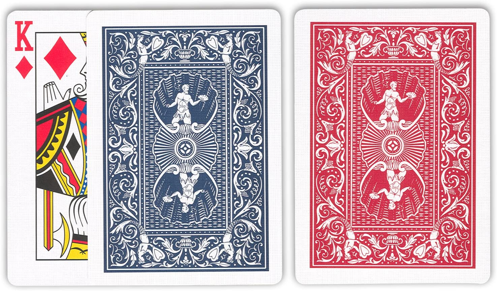
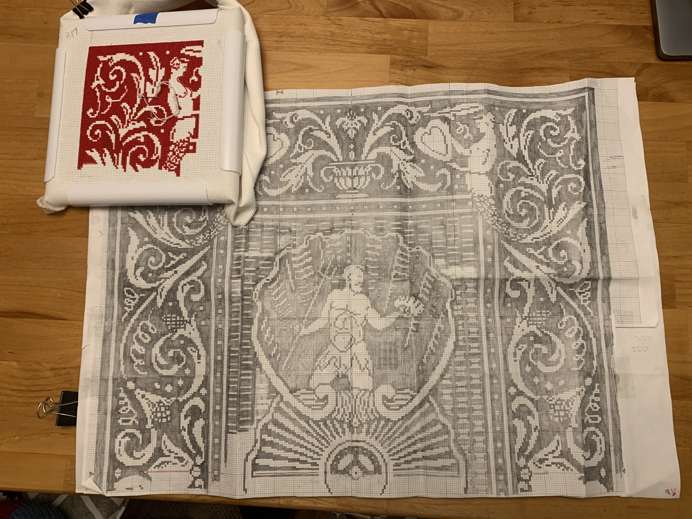
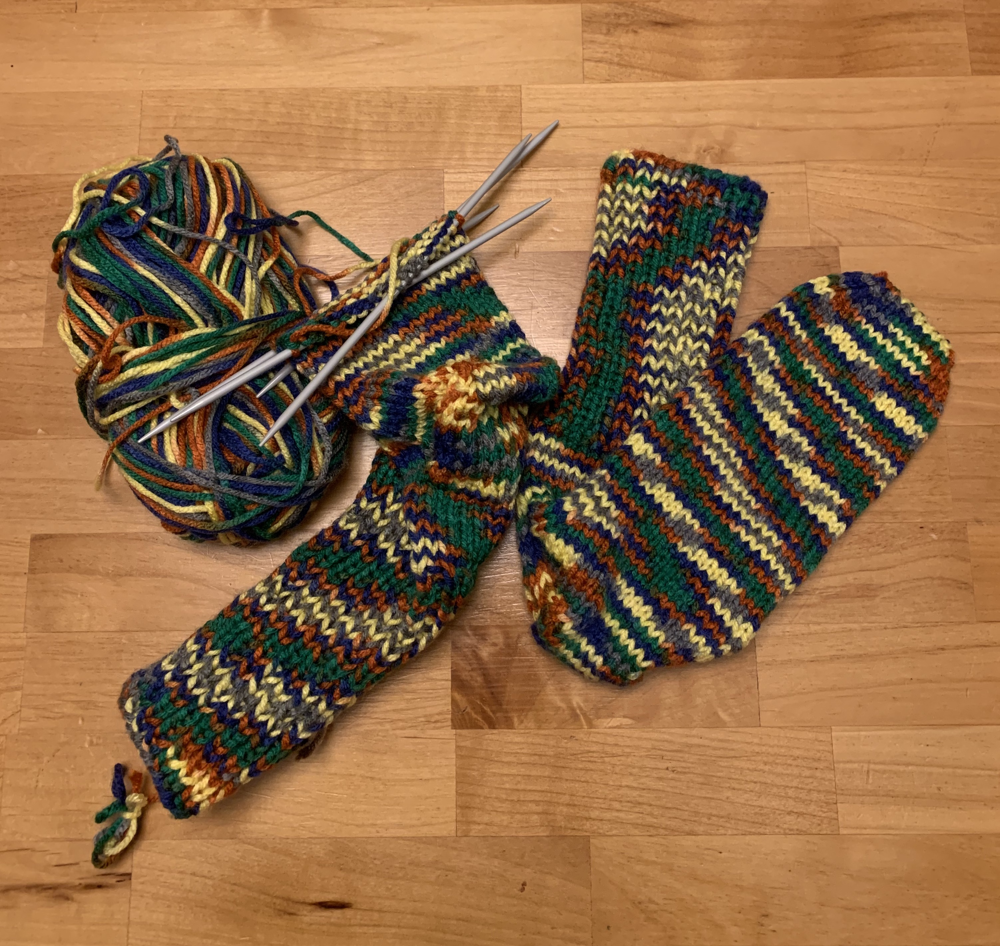

Thank you for visiting! This site shares some of the many things I like to make. Each page is centered around a major material type: wood, fibers, and paper. Each page shares some general thoughts and then some details on specific projects.
Current Projects
Here is what I am working on right now. Some projects are completed shortly after they begin, but others are worked on for a while then set aside. These usually tend to be big projects or projects where I am still working my way through fundamentals.
Playing Card cross stitch
This is an image of the back of a Hoyle Shellback Playing Card in red. The plan is to translate this image to a piece of counted cross-stitching. I’ve been working on this for over 10 years. First, I printed a large version of the image, then began tracing it onto graph paper. The next step is to rasterize the image as it appears. From there I work on cleaning up the lines and standardizing the pattern, correcting the variations in design that come from enlarging such a small image to such a large size. It’s a large project to do by hand and I have to set it aside for a while and work on something else.
 Knitted Socks
A few times a year I get out some knitting needles and knit some socks or a hat or a scarf. I am currently working on a small series of socks and trying to make adjustments to the pattern to achieve a different fit. These types of projects require careful attention to a pattern, but the stitches are simple and can be done while watching TV.
